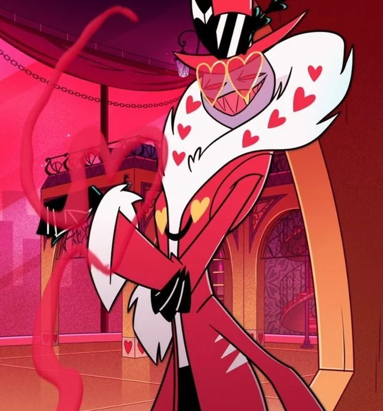
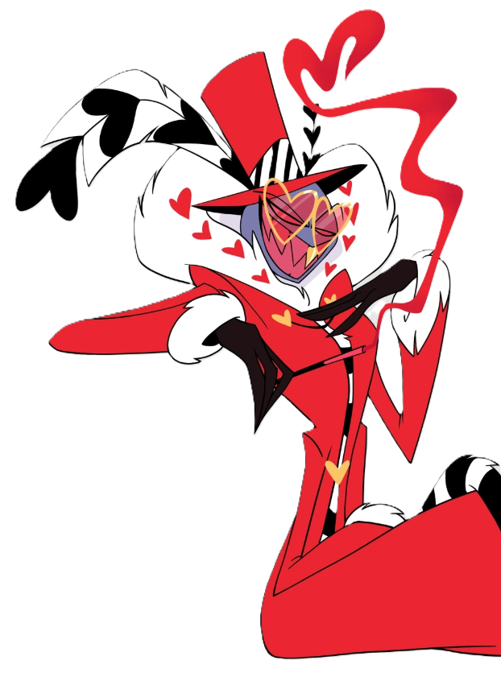
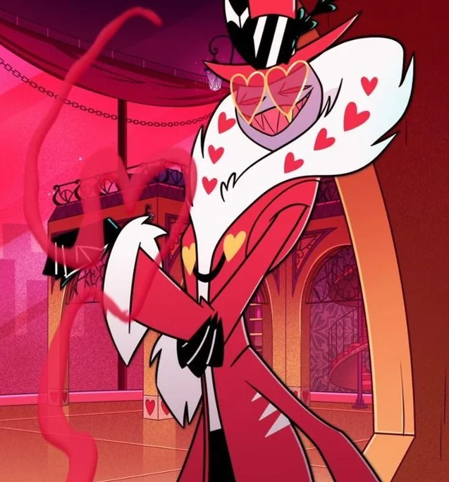
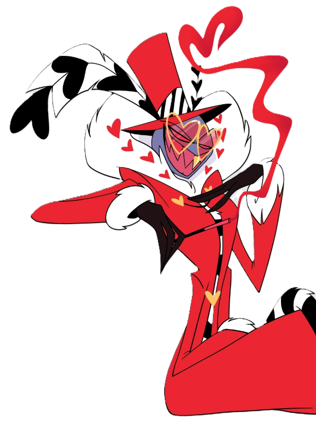

⛧ Valentino je jedním ze záporáckého tria The Vees. Je šéf a režisér ve studiu na filmy pro dospělé. Vlastní duši Angela, kterému zároveň šéfuje v práci. Používá svou okouzlující a svůdnou povahu, aby nalákal další naivní duše, které pak může kontrolovat. Když je má v hrsti, hodný Valentino končí a začíná destruktivní a teritoriální psychopat. Má sadistické tendence a má velmi casual romantický/sexuální vztah s Voxem.
⛧ Nemá svou reprezentativní písničku, ale TADY je kompilace jeho scén
⛧ Více informací zde!